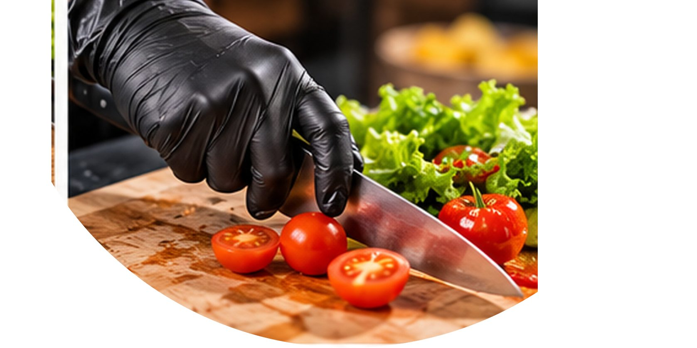
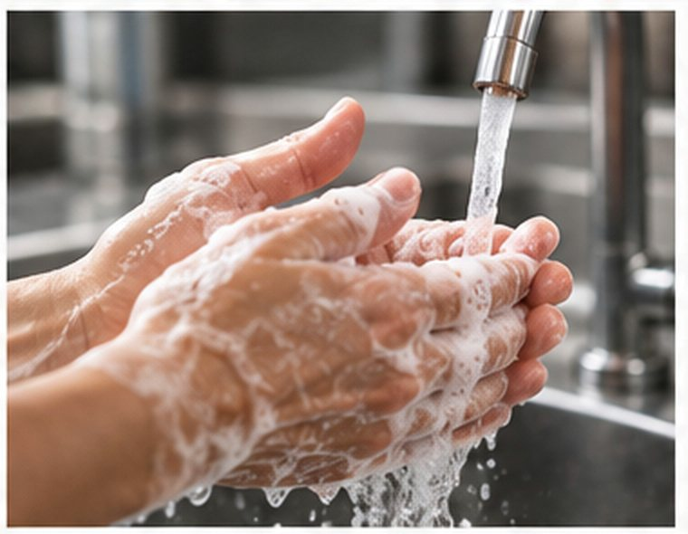
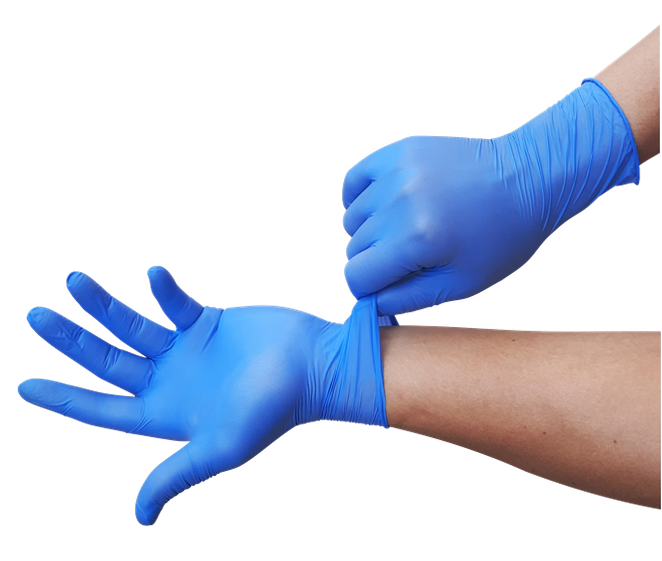
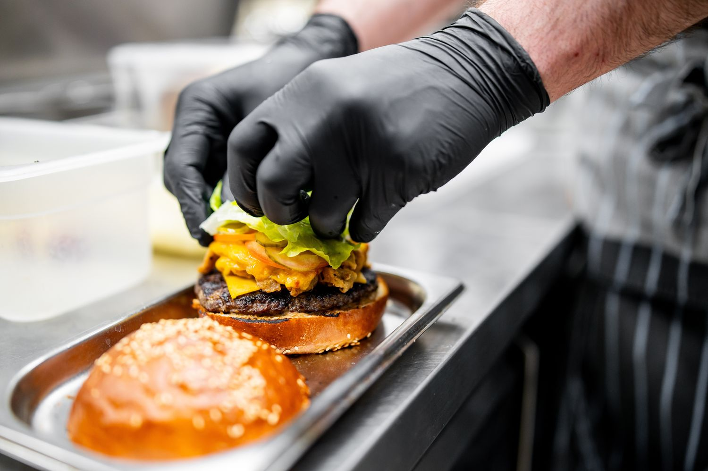
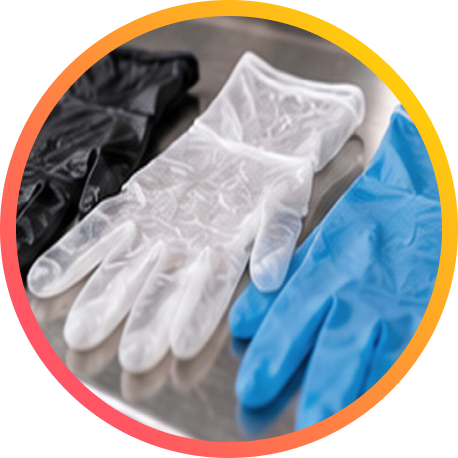

#75 out. 26
Por: Carol Belisse
Luva oumão lavada?
Entre a segurança no preparo e a percepção do cliente, entenda quando usar luvas e por que elas exigem mais cuidados do que aparentam.
Em uma cozinha profissional, ver alguém de luvas manipulando alimentos pode transmitir segurança. Já as mãos sem luva podem despertar desconfiança no cliente, especialmente na montagem de sanduíches, saladas e sobremesas. Mas essa impressão não revela, sozinha, se o alimento está sendo preparado com higiene.
Foi esse desafio que a Joe Hamburgueria Artesanal enfrentou após a publicação de um vídeo em que uma funcionária encosta o dedo no sorvete. Segundo o empreendedor, a cena gerou polêmica e comentários que questionavam o contato direto com o alimento e a ausência de luvas. “E sinceramente, olhando rápido, eu entendo que estranhou”, diz.
“Dependendo da forma de como a luva é usada, ela pode até piorar a contaminação. Porque a pessoa coloca a luva e automaticamente sente uma falsa segurança. Uma luva suja contamina um alimento pro outro sem ninguém perceber”, alerta o empresário.
O que a Anvisa recomenda?
A Resolução nº 216/2004, da Agência Nacional de Vigilância Sanitária (Anvisa), que estabelece as boas práticas para serviços de alimentação, não determina o uso de luvas durante todo o preparo.
O ítem 4.10.2 da resolução diz: “Os manipuladores devem adotar procedimentos que minimizem o risco de contaminação dos alimentos preparados por meio da anti-sepsia das mãos e pelo uso de utensílios ou luvas descartáveis”. Em outro trecho aparece: As unhas devem estar curtas e sem esmalte ou base. Durante a manipulação, devem ser retirados todos os objetos de adorno pessoal. (4.6.6 )
Trabalhar com as mãos sem essa proteção em determinada atividade, portanto, não representa, por si só, falta de higiene. O cuidado que permanece em qualquer situação é a higienização correta das mãos.
É o que também diz a Cartilha sobre Boas Práticas para Serviços de Alimentação, criada pela própria Anvisa

Acessar a cartilha
A luva também pode carregar contaminação
Ter os procedimentos definidos é importante porque colocar uma luva não interrompe o contato do manipulador com tudo o que existe ao redor; se o mesmo par passa pelo alimento, por uma embalagem ou superfície e volta para a preparação, os contaminantes também podem fazer esse caminho.
Por isso, a troca precisa acompanhar a atividade. As luvas devem ser substituídas quando estiverem sujas ou danificadas e quando houver interrupção para realizar outras tarefas. Antes de calçar um novo par, as mãos devem ser higienizadas.
A passagem do manuseio de alimentos crus para os prontos para consumo, por exemplo, exige higienização das mãos e, quando utilizadas, troca das luvas. Mesmo que o par ainda pareça limpo, ele não deve acompanhar essa mudança de tarefa.

E as luvas pretas?
A cor preta não garante que uma luva seja adequada para manipular alimentos: é preciso conferir sua indicação de uso. Em artigo publicado no Food Safety Brazil, a engenheira de alimentos Daniele Parra também chama atenção para a dificuldade de visualizar sujeira em luvas escuras. De qualquer cor, porém, elas precisam ser trocadas conforme a atividade, mesmo quando parecem limpas.

-
1
A cor faz diferença?
Não. Ser preta não torna a luva mais adequada para manipular alimentos.
-
2
Pode ser usada na cozinha?
Coloque cartazes em áreas de circulação (entrada, banheiros, balcão etc.), avisos em cardápios e mesas e comunique também nas redes sociais.
-
3
Protege do calor?
Não necessariamente. Apesar da crença popular, luva descartável não deve ser confundida com equipamento de proteção térmica.
-
4
Dispensa lavar as mãos?
Não. A higienização continua necessária antes de colocar as luvas e nas situações previstas pelas boas práticas.
-
5
E a troca?
A cor também não muda esse cuidado: luvas sujas, danificadas ou usadas antes de uma interrupção da atividade devem ser substituídas.
E quando o cliente questiona?
Uma dúvida sobre o uso de luvas merece uma resposta clara. Para o empreendedor, esse é o momento de ouvir a preocupação e explicar os cuidados adotados naquela etapa do preparo: como as mãos são higienizadas, quando entram os utensílios e em quais situações as luvas são trocadas.
Vale preparar a equipe para essa conversa. Dizer apenas que “a legislação não obriga” pouco esclarece como o alimento é protegido. A explicação ganha força quando corresponde ao que o cliente observa: quem manipula a comida evita tocar no celular, mantém as tarefas separadas e interrompe o trabalho para higienizar as mãos quando necessário.
O questionamento também pode revelar uma falha que precisa ser corrigida. Antes de defender a rotina, vale revisá-la. A confiança do cliente se constrói quando o cuidado anunciado pelo negócio aparece, de fato, no preparo.